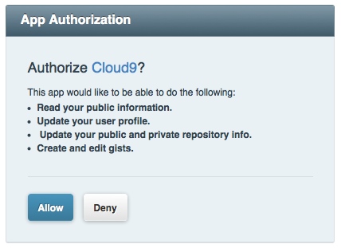
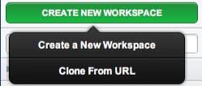
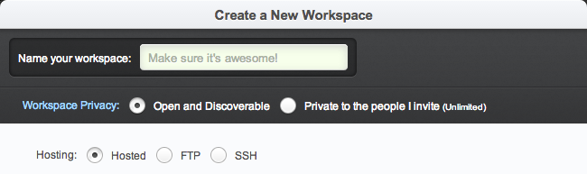

Setting Up a GitHub Workspace
GitHub is a code hosting service which offers you a lot of features to manage your public and private git repositories. For more information about GitHub and how to use it, visit https://github.com.
We have integrated GitHub into the IDE to enable you to easily work on your public and private Git repositories. The following article explains how you can activate your GitHub account in Cloud9 IDE.
GitHub Activation
You can manage your add-on services from your user profile that you can find in the dashboard. When you have just signed in, click Your Account on the top of the left-side panel. Here, you can change the settings of your account. At the bottom, you'll see a list of add-on services that are integrated into Cloud9 IDE. Click activate on the GitHub button:

A new window will pop-up on your screen. This window asks you to give authorization permission for the Cloud9 IDE application to interact in various ways with GitHub:

To finalize the activation, click on Allow. Next, you're redirected to your account page, where you'll notice that your GitHub account is activated. You can deactivate GitHub by simply clicking deactivate, which may be useful when you want to link your GitHub account to another Cloud9 account.
Now that you have activated GitHub, you can start to create and manage git projects!
Managing Git Projects
There are several ways to manage GitHub projects in Cloud9 IDE:
- By creating a new git project and pushing it to GitHub
- By cloning a GitHub project from a URL
- By bringing in a GitHub project manually
Creating a New Git Project
New projects are created from the dashboard. In the left-side panel, click on the  to add a new project:
to add a new project:

A new window will pop-up in which you can change your settings to your preferences:
- Fill in your preferred project name in the text field
- Choose who will have access to the project (a feature for Premium customers)
- Select your project type (git, mercurial, or FTP)
- Choose a development server (a feature for Premium customers) {: #setupOptions}

Select git as your project type. After you click CREATE, the project is listed in your dashboard. Select the project to see its Project Profile, where you can start editing:
There are a couple of things you should do first, before you can use all of git's power. First, you'll want to add a remote to the project. From the Cloud9 IDE command line, you can execute the following commands:
git remote add [remote name] [remote url]remote url is the location of the project on GitHub; for example 'git@github.com:/ajaxorg/node_chat'. You'll have to create a GitHub project first in order to generate this URL. Adding a remote URL lets you freely push and pull your project.
Next, create a few new files inside your project. By default, you should already have a README.md. You can add these files to git with the following command:
git add [file1, file2, file3, ...]Finally, create a commit that you can push to your remote:
git commit -m 'added new files'Don't forget to push this commit out to GitHub:
git push [remote name] masterTa-da! Your project is developed on Cloud9, and stored in GitHub.
Cloning Projects from a URL
You can also create a project in Cloud9 IDE by cloning it from a URL. Once again, click on the  , and select Clone from URL. A new window pops up, asking you:
, and select Clone from URL. A new window pops up, asking you:
- to enter a Source URL
- to choose who will have access to the project (Premium feature)
- to choose a development server (Premium feature)
{: #cloningOptions}

You can find an examples of a GitHub URL on any of their repo description pages:

Paste the URL in the source field and click CHECKOUT. In the left-side panel, you'll see the project and its status turn into "Cloning in Progress". When this process is completed you can open the project and start editing it, just like any other project.
Clone Projects Already On GitHub
When you provide Cloud9 IDE with your GitHub credentials, it provides a list of projects you haven't yet imported into the editor:

From this list, clicking on a project and selecting CLONE TO EDIT brings the repo into the IDE, just as if you cloned it from a URL.